我的專案
企業概論
管理學
多媒體
我的作品
高中
大學
Gill's website
興趣使然
歌劇魅影
鐘樓怪人
悲慘世界
關於本人
高中
大學
《 my Work 》
高中
管樂社服
為第 26 屆陽明管樂社所設計之社服，皆以百搭的白色為底，並於其上增添圖案，確保實用性。
黑白 — 簡約系，黒與白的混搭，以及銅管木管各一具代表性的樂器，剩餘樂器用灰色作為暗紋，使整體不過於單調。
崩解．重組 — 童趣風格，以積木來表現出樂團在轉變為嶄新一屆時必經的過程，即便過程中稍有摩擦卻仍然會因音樂而團結。
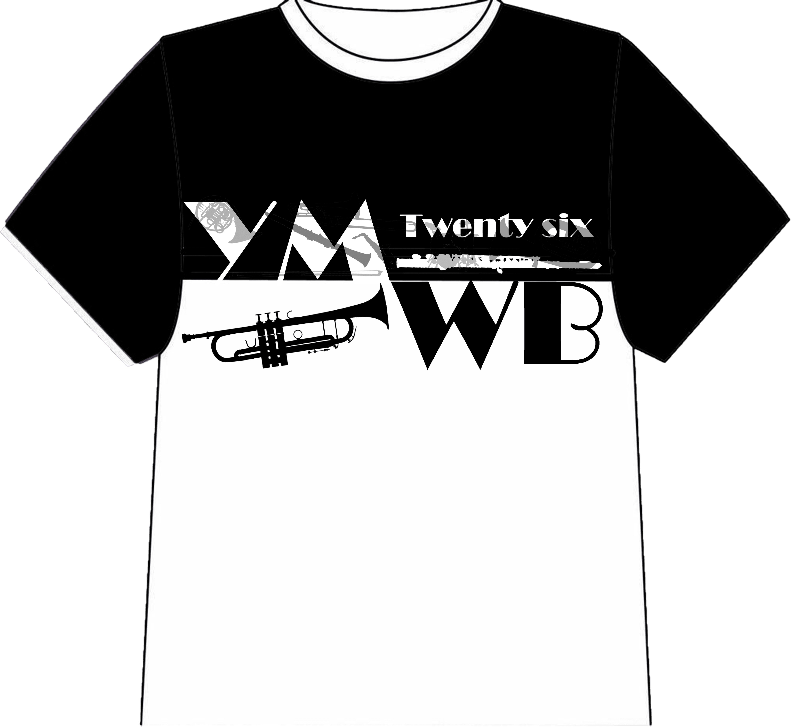
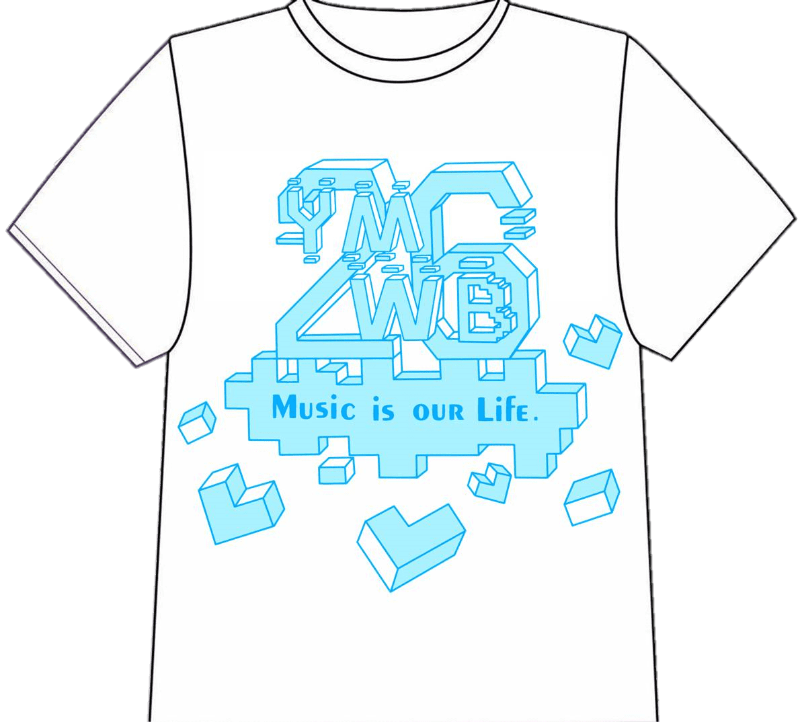
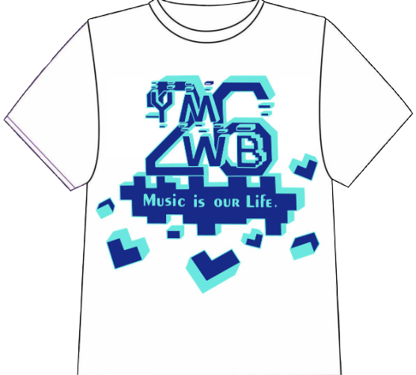
❮
❯
海報及文宣
打擊小成系列 — 用電腦製作海報作品的開端，整個色調以藍色為主軸，金色為點綴。節目單除了結合海報主題色，也利 用黑色花紋妝點，使整體更為華麗。
成果發表會海報 — 整體為青藍色，利用漸層效果打造光從上而下撒落的舞台效果，用多種樂器造型拼湊出字體，並大量使用星星造型營造出嘉年華的熱鬧感，但因當時時間緊迫沒時間修改，畫面有些雜亂。
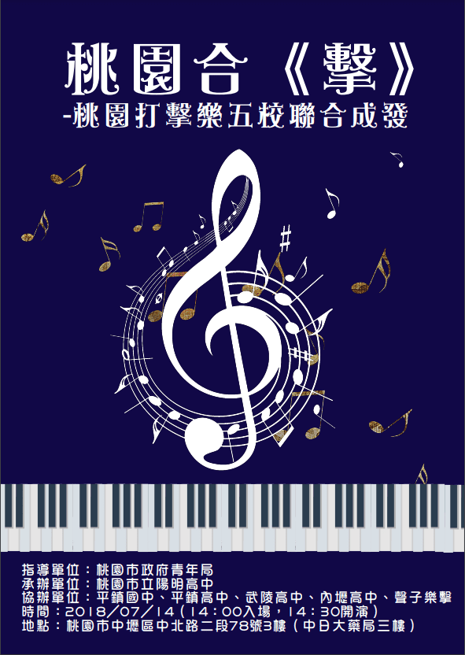
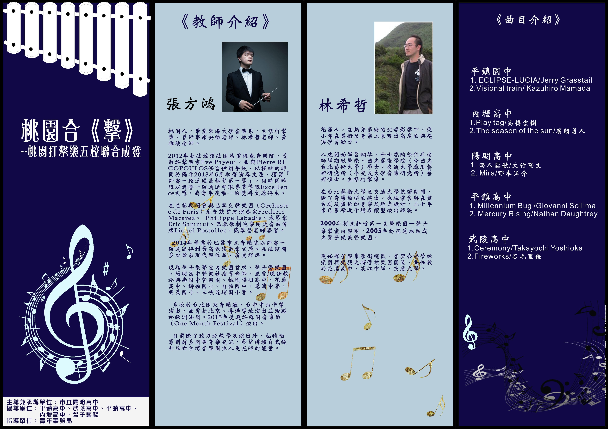
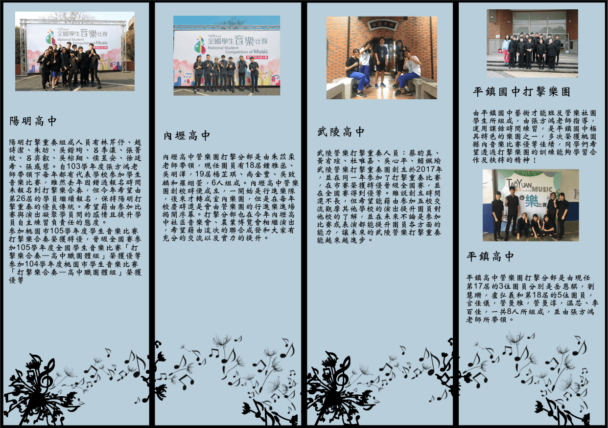
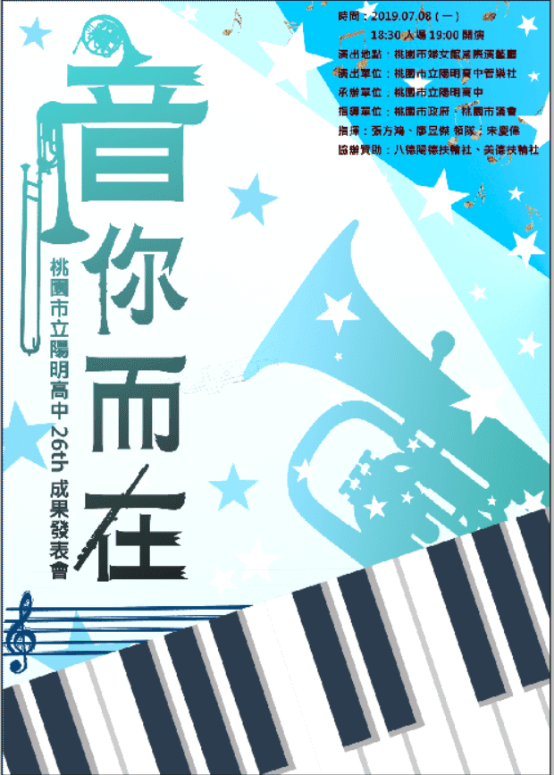
❮
❯
大學
企業概論專案作品
擺攤海報 — 海報主體為咖啡色，上方標題背景表現木質看板，傾斜角度呈現出一絲調皮，正如同孩子們嬉戲時所帶有的童趣。 而一旁人物是為切合專案主名所設計之"王爸爸"角色。
商品型錄 — 濾掛式咖啡該在輕鬆的氛圍下品嘗，簡約的以米白色為底，淺咖啡色作為輔色，希望帶給閱覽者輕鬆之感。
宣傳單 — 整體呈現木質感，以棕紅色為主呈現希望帶給他人溫暖的主題，同時也畫上代表人物和主要販售之商品，使消費者能一目瞭然的清楚本商店販售之商品。
促銷宣傳單 — 因專案實施之時為冬天，便以此作為主題，讓商品成為消費者在寒冷冬日之中的慰藉。
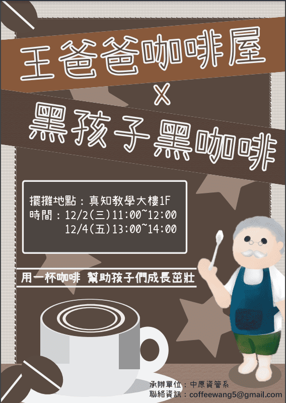 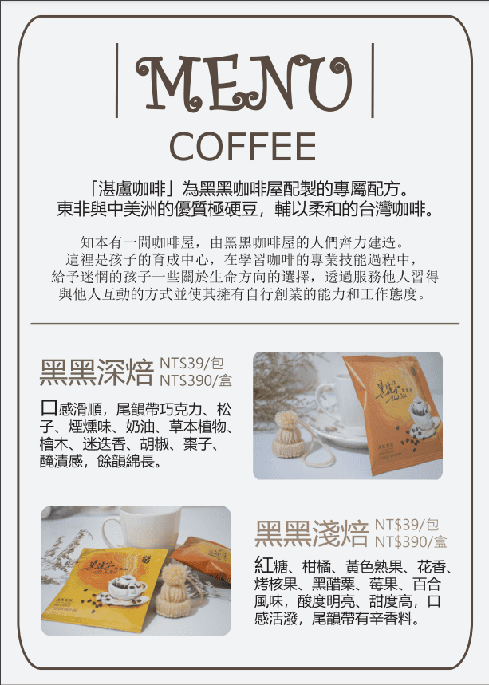 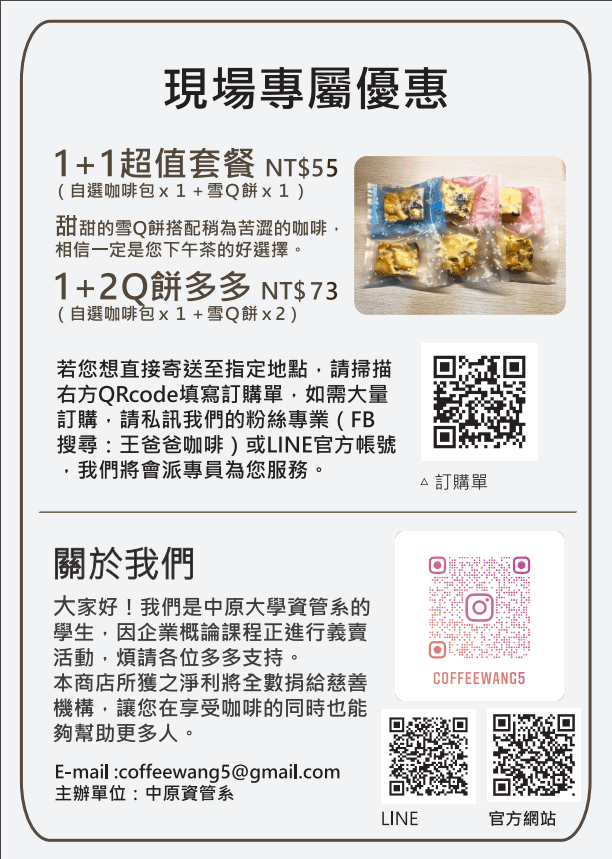 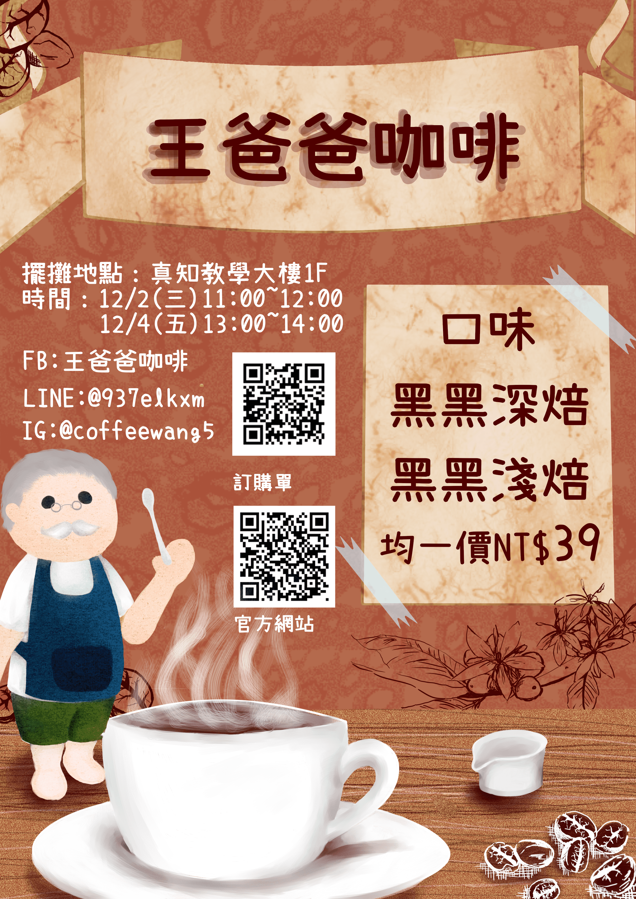 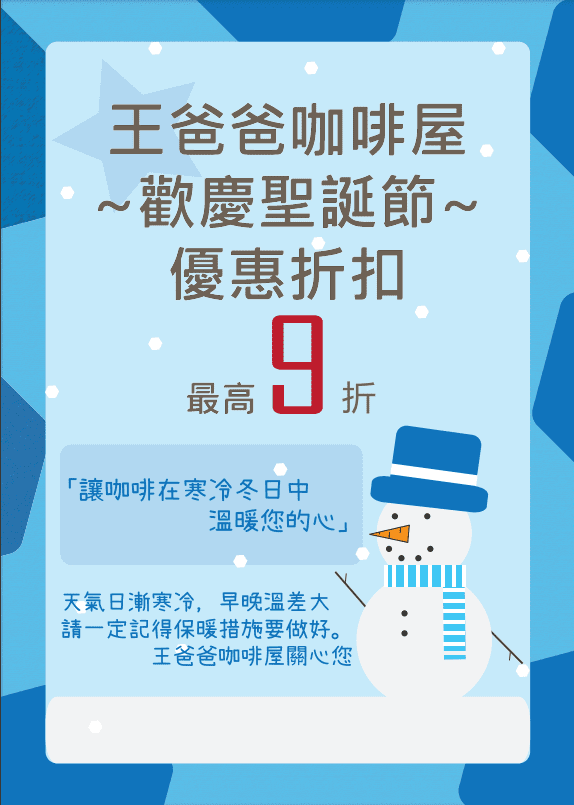
▲